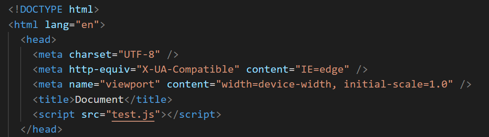
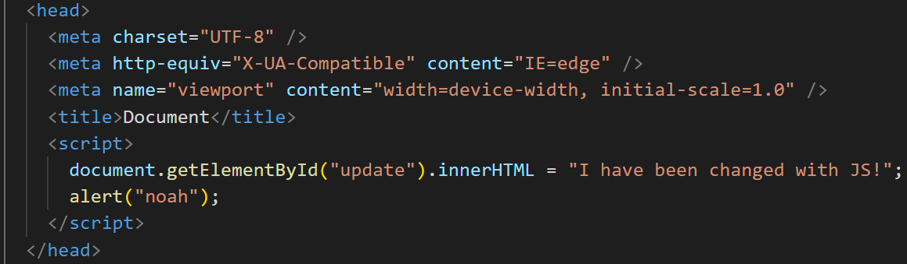

JavaScript lessons
nr.1 What is JavaScript?
JavaScript is a programming language that we use to make our pages dynamyc and functional.
nr.2 How to add JavaSript to your project
Inserting JavaScript can be done with the script tag. Here in the external version as a file with the name "test.js". All JavaScript will be in this file.

Inserting JavaScript can be done with the script tag. Here in the internal version where the code is directly in the webpage.

You also can put both Versions in to the body , but only on to the bottom or on to the top and only once!